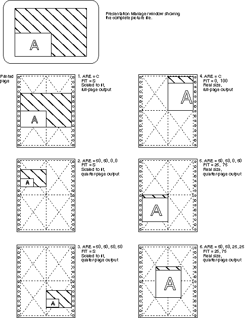

Examples Using the ARE and FIT Parameters
The application uses the ARE and FIT parameters to determine
which part of the picture is printed, and where on the physical page it
is printed. The following figure provides practical examples of how to use
these parameters.
Examples Using the ARE and FIT Parameters
[Back: PMPRINT/PMPLOT Queue Processor Parameters]
[Next: Submitting a Direct Presentation Manager Print Job]